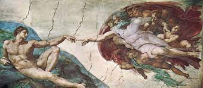
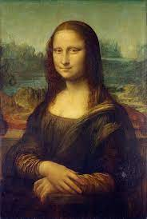
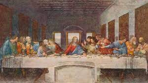
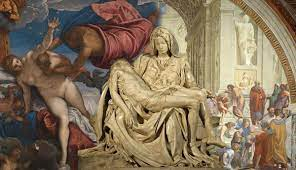
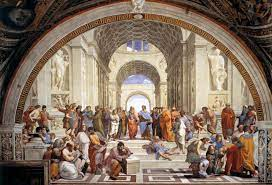
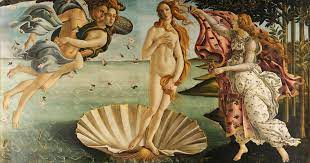
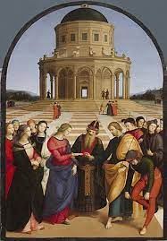
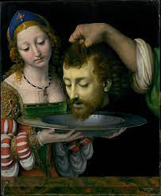
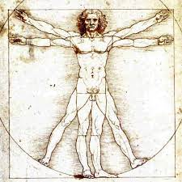

შესავალი რენესანსის ეპოქაში
რენესანსი, რომელიც მოიცავდა მე-14-დან მე-17 საუკუნემდე, აღინიშნება როგორც ღრმა კულტურული და ინტელექტუალური აღორძინება ევროპაში. შუასაუკუნეების ჩრდილებიდან გამოსული ეს პერიოდი მოწმე იყო განახლებული ინტერესი კლასიკური სწავლის, ჰუმანიზმისა და უფრო ინდივიდუალისტური და სეკულარული მსოფლმხედველობისკენ გადასვლაზე.
კულტურული აღორძინება
რენესანსის დროს საზოგადოებამ განიცადა კულტურული ცნობიერების, სამეცნიერო კვლევისა და მხატვრული ინოვაციების აღორძინება. ეს იყო დრო, როდესაც ადამიანები ცდილობდნენ ხელახლა აღმოეჩინათ ძველი ცივილიზაციების სიბრძნე და მიეღოთ უფრო განათლებული მიდგომა ცხოვრებისადმი.
რენესანსის ხელოვნება
რენესანსის ერთ-ერთი ყველაზე განმსაზღვრელი მახასიათებელი იყო მისი რევოლუციური გავლენა ხელოვნებაზე. ამ ეპოქის მხატვრები ჩამოშორდნენ შუა საუკუნეების ტრადიციებს, აითვისეს რეალიზმი, პერსპექტივა და ახლად აღმოჩენილი აქცენტი ადამიანის ფორმის მშვენიერების გამოსახატავად.
ჰუმანიზმი ხელოვნებაში
ჰუმანიზმმა, ძირითადმა ინტელექტუალურმა მოძრაობამ, დიდი გავლენა მოახდინა რენესანსის ხელოვნებაზე. მხატვრებმა ყურადღება გადაიტანეს რელიგიური საგნებიდან ადამიანურ გამოცდილებაზე, ასახავდნენ ინდივიდებს სიღრმით, ემოციებით და ანატომიური სიზუსტით.
აღორძინების ეპოქის ოსტატები
ეპოქამ გამოუშვა ისეთი საკულტო მხატვრები, როგორებიც არიან ლეონარდო და ვინჩი, მიქელანჯელო და რაფაელი, რომელთა შედევრები აგრძელებს მაყურებლის მოხიბვლას. ლეონარდოს "მონა ლიზა", მიქელანჯელოს "დავითი" და რაფაელის "ათენის სკოლა" რენესანსის მხატვრობის მარადიული ნიმუშებია.
მეცნიერული და მხატვრული სინერგია
აღორძინების ეპოქაში დაინახა ხელოვნებისა და მეცნიერების უნიკალური დაახლოება, მხატვრები ხშირად პოლიმათები იყვნენ. მაგალითად, ლეონარდო და ვინჩიმ თავის მხატვრულ გენიას შეუთავსა მეცნიერული კვლევა, აწარმოა ანატომიური ჩანახატები და სამეცნიერო დაკვირვებები თავის სახელგანთქმულ ნახატებთან ერთად.
ინოვაცია ტექნიკაში
რენესანსის მხატვრებმა წამოაყენეს ახალი ტექნიკა, როგორიცაა chiaroscuro (შუქი და ჩრდილი) და ხაზოვანი პერსპექტივა, რაც აძლიერებს მათი შემოქმედების რეალიზმს და სიღრმეს. ამ სიახლეებმა საფუძველი ჩაუყარა მომავალ მხატვრულ განვითარებას.
რენესანსის მემკვიდრეობა
რენესანსის გავლენა საუკუნეების განმავლობაში ჟღერს, გავლენას ახდენს ხელოვნების შემდგომ მოძრაობებზე და აყალიბებს დასავლური ცივილიზაციის კურსს. მისი მემკვიდრეობა აშკარაა რენესანსის ხელოვნების მუდმივ სილამაზესა და კულტურულ მნიშვნელობაში, რომელიც აგრძელებს მაყურებლის შთაგონებას და მოხიბვლას მთელ მსოფლიოში.
დასკვნა
რენესანსმა, ინტელექტუალური და მხატვრული გამოღვიძების პერიოდმა, შეცვალა ევროპის კულტურული ლანდშაფტი. ჰუმანიზმზე, მეცნიერულ კვლევასა და ინოვაციურ ხელოვნებაზე ხაზგასმით, ეპოქამ წარუშლელი კვალი დატოვა ისტორიაში, გზა გაუხსნა შემოქმედებისა და ცოდნის აყვავებას.
